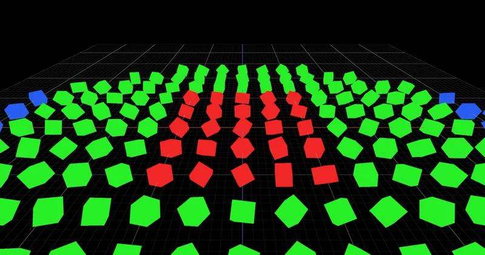

3D Lighting & Environment SkyBox & IBL FrustumCulling
DistanceCulling - RedGPU WebGPU Example
Excludes distant objects from rendering based on camera distance.
카메라와의 거리에 따라 원거리 객체를 렌더링에서 제외하는 거리 컬링입니다.

3D Lighting & Environment SkyBox & IBL FrustumCulling
Excludes distant objects from rendering based on camera distance.
카메라와의 거리에 따라 원거리 객체를 렌더링에서 제외하는 거리 컬링입니다.
